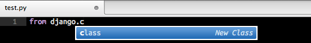
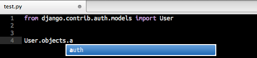
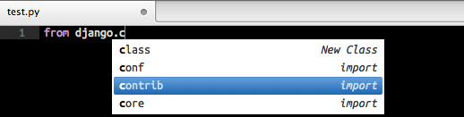
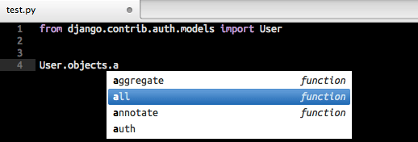

Sublime Text as Python IDE - jedi
I used Sublime Text exclusively for the last two weeks. The major drawback, beside the not really native user interface, was the way jedi works. After tweeting that the integration in vim using YouCompleteMe is way better I received the question how to properly configure Sublime Text to use jedi - let me give you a short walkthrough.
If you are not sure why you want jedi - believe me, you do - let me show you two screenshots with and without jedi. Without jedi editing a file looks like this
 
Now if we configure jedi properly and it looks like this
 
I don't know how you work and what your preferences are, but I prefer a working autocompletion and not one who only completes words in the same file or open files - I'm looking at you TextMate. Makes it a lot easier working on larger codebases if you do not have to remember every single class attribute, method and argument.
First have to install SublimeJedi. It looks like the people who asked why it isn't working for them are either using virtualenv or never used the projects functionality and don't know how to configure a project in Sublime Text. This are basically the only two options I can think of.
Open Sublime Text and the project you are working on and save it as a project using Project -> Save Project as…. The only thing left to do is editing your project file using Project -> Edit Project. The most basic configuration looks like this
{
"folders":
[
{
"follow_symlinks": true,
"path": "my-project"
}
],
"settings": {
"python_interpreter_path": "/Users/tizi/my-project/venv/bin/python"
}
}
Now jedi will use the Python interpreter from the virtual environment I created in my-project/venv. It will also index and complete all packages you install in your virtual environment. For more configuration options I suggest reading the documentation of SublimeJedi. Now that you have understood the configuration is should be fairly easy to add the additional options if needed.
I would love to talk to you about this post, your ideas or awesome projects.
I am @fallenhitokiri on Twitter and GitHub or you can send me a mail.